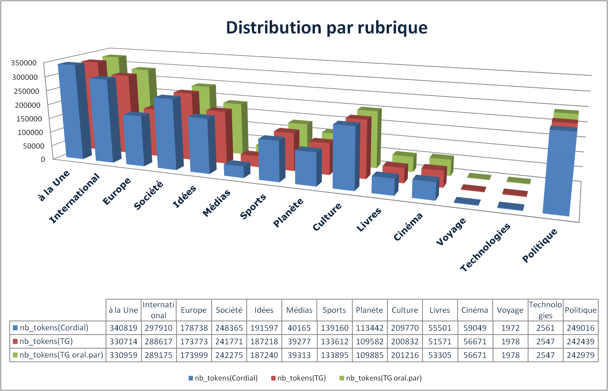
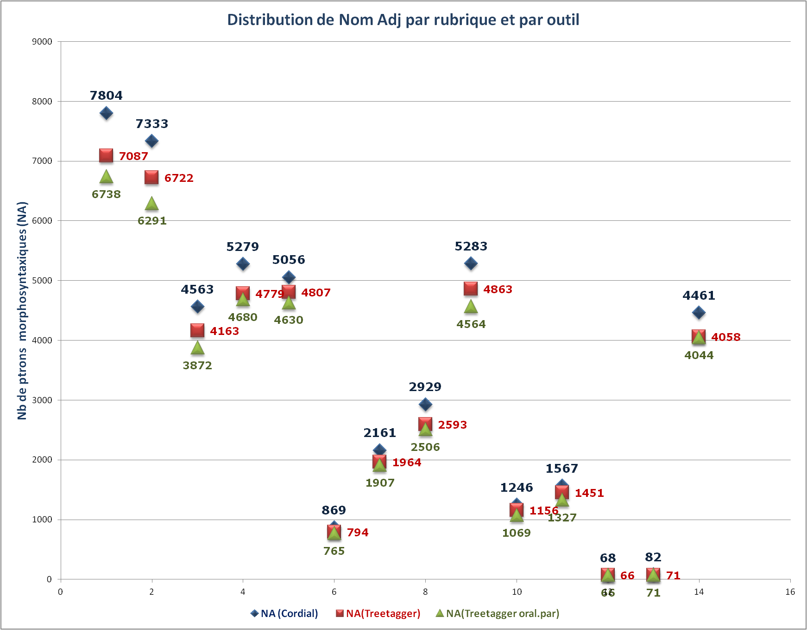
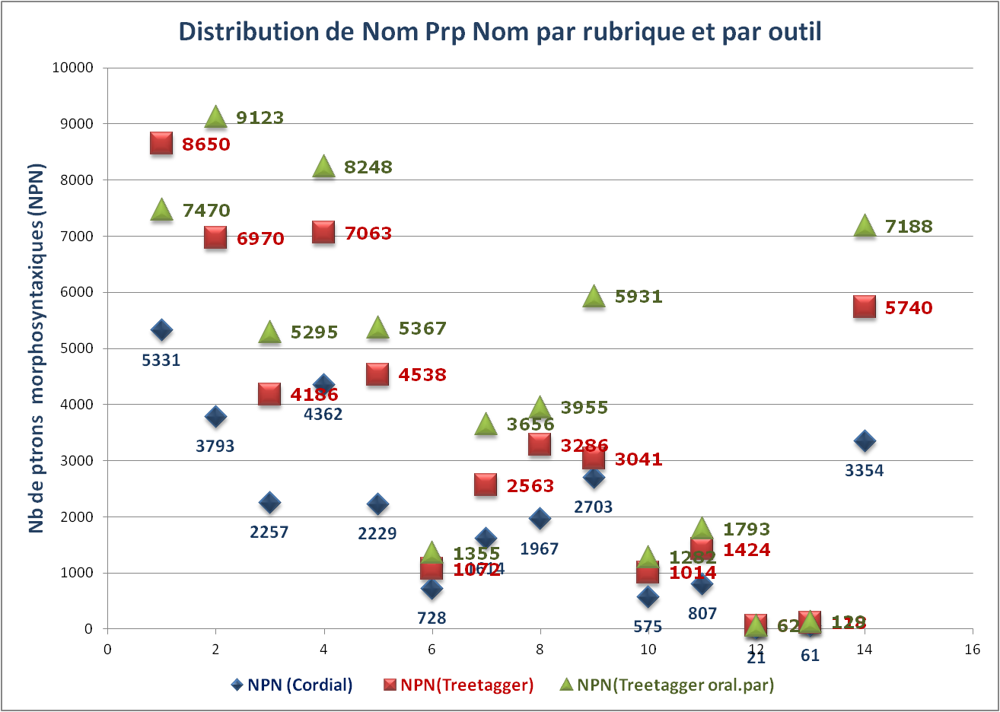
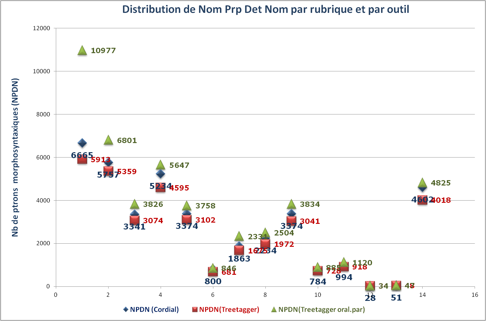
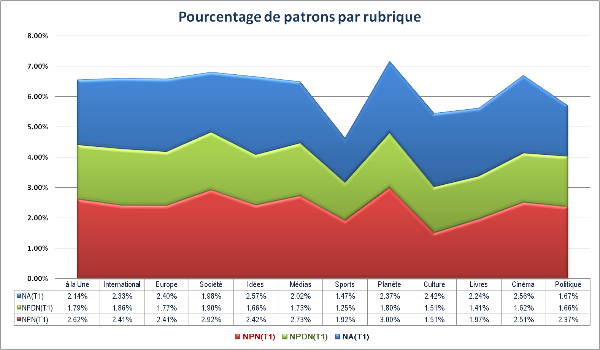

Analyse
L'enchaînement de nos quatre Boîtes à Outils nous permet un répérage automatique des patrons morphosyntaxiques et une représentation graphique des cooccurrences. Dans le cadre du projet, nous nous appuyons sur l'étiquetage morphosyntaxique et l'extraction des patrons morphosyntaxiques. Comme les résultats se distinguent de telle ou telle manière, nous avons envie de savoir s'ils sont pertinents et représentatifs. Nous aimerons également diagnostiquer cette divergence, ainsi que proposer quelques pistes d'amélioration possibles.
I. APERCU
Dans un premier temps, il convient d'avoir un aperçu de nos données.
Distribution de nombre de tokens par rubrique

Données : les sorties de BàO 2 par rubrique, en fonction des outils utilisés.
Légende
A première vue, les rubriques à la Une(3208), International(3210), Europe(3214), Société(3224), Idées(3232), Culture(3246) et Politique(823353) sont très significatives en terme de taille. La variation des outils, quant à elle, montre grosso modo que les tokens via Cordial sont légèrement plus nombreux que ceux produits par Treetagger.
Du point de vue journalistique, ces rubriques mentionnées supra constituent toujours une partie importante des contenus d'un journal (sauf des journaux spécialisés, bien sûr). Il serait intéressant de nous appuyer sur ces rubriques représentatives pour l'analyse lingistique.
Du point de vue de TAL, il faudrait comparer ces deux outils d'étiquetage morphosyntaxique en analysant leurs produits à fin d'améliorer les boîtes à outils.
NOTE : Définissons quelques @PARAM locaux pour l'analyse infra.
- T1 = Treetagger avec le fichier de paramètre :french-utf8.par ;
- T2 = Treetagger avec le fichier de paramètre :french-oral-utf-8.par ;
- NA = Nom Adj ;
- NPN = Nom Prp Nom ;
- NPDN = Nom Prp Det Nom ;
Distribution de nombre de patrons morphosyntaxiques (NA) par rubrique

Données : les sorties de BàO 3 par rubrique, en fonction des outils utilisés.
Légende
NOTE : les trois moyens (perl/XSLT/XQuery) ont le même résultat.
Distribution de nombre de patrons morphosyntaxiques (NPN) par rubrique

Données : les sorties de BàO 3 par rubrique, en fonction des outils utilisés.
Légende
Distribution de nombre de patrons morphosyntaxiques (NPDN) par rubrique

Données : les sorties de BàO 3 par rubrique, en fonction des outils utilisés.
Légende
Remarques :
[Remarque 1] Cordial a étiquté beaucoup plus de patrons NA que T1 et T2.
En général : NombreTrouvé(Cordial > T1 > T2).
Soit, R1i = (nb_Ci – nb_T1i)/nb_Ci, R2i = (nb_Ci – nb_T2i)/nb_Ci :
Sur 14 rubriques,
Moyenne(R1) = 8,42 %;
Moyenne(R2) = 12,1 %;
MoyenneHarmonique(R1) = 7,41 %;
MoyenneHarmonique(R2) = 11,11 %;
Max(R1) = 11,47 % (Planète);
Max(R2) = 15,14 % (Europe);
Min(R1) = 4,92 % (Idées);
Min(R2) = 8,43% (Idées).
[Remarque 2] Pour des patrons de type NPN, il s'agit d'un autre scénario totalement au contraire, c'est-à-dire que les patrons extraits des rubriques étiquetées via Cordial sont moins nombreux que ceux extraits des résutats de T1 et T2.
En général: NombreTrouvé(Cordial < T1 < T2).
Soit, R1i = (nb_T1i – nb_Ci)/nb_Ci, R2i = (nb_T2i – nb_Ci)/nb_Ci :
Sur 14 rubriques,
Moyenne(R1) = 78,23 %;
Moyenne(R2) = 117,46 %;
MoyenneHarmonique(R1) = 54,98 %;
MoyenneHarmonique(R2) = 103,91 %;
Max(R1) = 103,59 % (Idées);
Max(R2) = 140,78 % (Idées);
Min(R1) = 12,50 % (Culture);
Min(R2) = 40,12 % (A la Une).
[Remarque 3] Pour des patrons de type NPDN, la situation est encore plus complexe :
En général : NombreTrouvé(T1 < Cordial < T2).
On adapte les formules pour calculer sur des nombres positifs.
Soit, R1i = abs(nb_T1i –nb_Ci)/nb_Ci, R2i = abs(nb_T2i –nb_Ci)/nb_Ci :
Sur 14 rubriques,
Moyenne(R1) = 10,56 %;
Moyenne(R2) = 16,63 %;
MoyenneHarmonique(R1) = 9,44 %;
MoyenneHarmonique(R2) = 11.10 %;
Max(R1) = 14,88 % (Média);
Max(R2) = 64,70 % (A la Une);
Min(R1) = 6,91 % (International);
Min(R2) = 4,85 % (Politique).
NOTE : Pour Max() et Min(), on élimine les rubriques Voyage et Technologies (taille trop petite dans l’ensemble).
ATTENTION : les chiffres supra (grand ou petit) ne veulent rien dire pour évaluer ces outils car nous ne disposons pas de gold standard. Néanmoins, Ils nous montre, à un certain degré, la divergence, nous permettant d’entrer dans des rubriques spécifiques pour une analyse plus fine.
II. PERSPECTIVE LINGUISTIQUE
Dans notre travail, les groupes nominaux nous intéressent : Nous avons extrait spécifiquement les patrons de type NOM ADJ, NOM PREP NOM, NOM PREP DET NOM. L’observation des fréquences des patrons morphosyntaxiques permet de mener une analyse linguistique tenant compte des structures préférentielles de la figure, distinguant structure prototypique et structure exceptionnelle(Leroy, 2002).

Dans cette section, notre étude exclut tout d’abord les rubriques Voyage et Technologie à cause de leur taille petite par rapport à celle des autres.
Ce diagramme à colonnes empilés montre le pourcentage de nombre de patrons par rapport au nombre de tokens dans la rubrique. Nous remarquons tout de suite que les rubriques Sports, Culture et Livres sont caractérisées par leur basse pourcentage des patrons. Par contre, les rubriques Planète et Cinéma se distinguent par ce chiffre significatif. A propos des autres rubriques, elles ont tendance à s’assimiler.
A titre d’exemple,nous pouvons faire une exploration lexicométrique dans notre sous-corpus composé des rubriques Planète(3244) et A la Une (3208).
Selon les graphes générées dans la BàO4, dans la rubrique Planète, il existe des patrons qui appartiennent à autres champs sémantiques et ont une fréquence significative dans les listes, tels que « président américain », « Union européenne », etc. Nous avons donc examiné les cooccurrences de ces deux patrons dans la rubrique Planète, et examiné aussi le motif « climat » dans la Rubrique A la Une pour observer comment ces champs sont liés.
Climat à la Une
La plupart des cooccurents portent une signification négative : « désordres », « risque », « délétère », « menace » etc.
Américain/Européen sur la Planète
La graphe est beaucoup plus compliquée.
Les cooccurrents autour de « européen » et « américain » se distinguent. Pour le premier, il s'agit d'organisation, d'accord, tels que « Union », « Commission », « Autorité », « concensus ». Quant à « américain », les cooccurrents varient : « revue », « sciences», « président », « télévision », « retrait », etc.
Selon nos graphes dans BàO4, il est intéressant de voir que pour un même motif, ses « compagnies » varient en fonction de rubriques. Cela bien vérifie qu'un mot en soi ne signifie rien en dehors de son utilisation.
III. PERSPECTIVE TAL
La performance de BàO3 est un bon indicateur de la performance de BàO2, c’est-à-dire que la sorite de BàO2 a une grand influence sur le résultat de BàO3. Il serait donc logique de commencer par une comparaison de différentes outils (et leur paramètres éventuels) d’étiquetage pour proposer des pistes d’amélioration.
Selon les statistiques supra, nous faisons l'hypothèse qu'il existe une grande divergence de l'étiquetage via Cordial et Treetagger ; pour Treetagger lui même, un changement de fichier de paramètres influence beaucoup le résultat.
[Remarque 1] Dans la BàO3, les index construits par Cordial produisent moins de NPN et NPDN que ceux générés par Treetagger.
D'où vient cette divergence ? Nous nous permettons d’effectuer une petite recherche documentaire. Selon le manuel de Cordial, il y a une option facultative de découper les expression en unités élémentaires. c'est-à-dire que soit on ne clique pas cette option, auquel cas, Cordial groupe les expressions qu'il estime devoir être groupées (chemin de fer, pomme de terre, l'un et l'autre...), soit on clique cette option, auquel cas les expressions ne sont pas groupées et chacun des mots les composant fait l'objet d'une analyse morphologique et grammaticale spécifique. Dans notre projet, il a été conseillé de la décroché. A notre avis, cette option est l'un des facteurs les plus significatifs qui augmentent la différence des résultats de ces deux outils.
Quant à Treetagger, il tokenize le texte en unités élémentaires. En l’occurrance, les expressions mentionnées supra sont inévitablement séparés et étiquetés. Cela explique pourquoi les sorties via Cordial construisent moins de patrons de type NPN/NPDN, car ils sont étiqueté autrement et ne font plus partie de ce type.
Piste d'amélioration possible : Dans l'étiquetage, on essaie de paramétrer Cordial en crochant « Découper les expressions en unités élémentaires » ; cela peut-être util pour augementer le rappel.
[Remarque 2] il y a un certain nombre de tokens qui ne sont pas correctement étiquetés. Cela arrive souvent lors que l'étiqueteur rencontre des mots grammaticaux, par exemple le fameux « des » ; ou un nom propre qui est inconnu par le dictionnaire. Dans notre corpus, le nom de famille « Le Pen » est considéré par Cordial un adjectif, alors que « Macron », au sein d'une rubrique, possède deux étiquettes : Nom et Nam via l’étiquetage de Treetagger.
Piste damélioration possible : Nous pouvons entraîner notre propre modèle avec train-tree-tagger, par exemple.
[Remarque 3] Des ponctuations ont été étiquetées comme adj, nom, etc. Dans les sorties étiquetées avec T2, le guillmet français " « " ( u+00ab left-pointing double angle quotation mark ) est un adjectif, qui provoque de nombreux bruits dans notre patrons mophosyntaxique. Il est bien reconnu par Cordial ou T1 lors de l'étiquetage, nous n'avions pas pu prévoir cette divergence via le paramétrage T2. A propos d'autres types de ponctuations, (« full-width » par exemple) , nous avons grosso modo réglé des problèmes.
Piste d'amélioration possible : bonne normalisation de texte en entrée, qui peut augmenter significativement la performance, comme notre transformation de « ’ » (u+2019 right single quotation mark) en apostrophe. De plus, dans certains cas, il est possible d'enlever prèsque tous les ponctuations.
IV. Conclusion
Nos remarques, même si non exhaustives, nous permettent de diagnostiquer ou éventuellement résoudre des problèmes, et nous inspirent d'autres pistes explorables, par exemple, Cordial a deux centaines d'étiquettes dans son jeu, nous pouvons en profiter et affiner notre motif. Outre les fichiers de paramètres, nous pouvons fournir un dictionnaire/lexique, etc. Il y a toujours une meilleure solution...
Références
Allauzen, Alexandre, and Hélene Bonneau-Maynard. "Training and Evaluation of POS Taggers on the French MULTITAG Corpus." LREC. 2008.
Leroy, Sarah. "Des patrons morpho-syntaxiques pour le repérage automatique de l'antonomase du nom propre." Morin A. & Sébillot P.(éd.), JADT 2002–6es Journées internationales d'Analyse statistique des Données Textuelles, Saint-Malo.. Vol. 2. 2002.
Schmid, Helmut. "Probabilistic part-ofispeech tagging using decision trees." New methods in language processing. 2013.